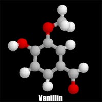

|
Let's take a more in depth look at food additives. As stated, the term food additive applies to chemicals that are added to food (at low levels -- from parts per million to 1-2% by weight) to
- facilitate processing (emulsifiers, anticaking agents);
- extend shelf life (antioxidant to retard the onset of rancidity) and ensure microbiological safety (preservatives to control microorganisms);
- improve nutritional value (trace mineral and vitamin fortification) and;
- enhance appetitiveness and taste (flavoring, coloring substances).

When intentionally added to food, additives perform specialized functions that favorably impact the economics of processing, formulating and distributing food products. Substances that come under the definition of direct food additives number over 2,500 chemicals, including more than 1,500 aroma chemicals. Many are common chemicals of the industry upgraded in terms of purity to allow their use in food (like phosphoric acid).
Included in the overall direct food additive category are
- inorganic chemicals (phosphates, sulfites, salts)
- synthetic chemicals (dyes, silicones, benzoates, vitamin A)
- extraction products from natural sources (gums, essential oils, vitamin E)
- fermentation-derived products (enzymes, citric acid, aspartame)
Most food additives have a long history of use while others are the result of recent research and development to fulfill particular requirements of modern food processing (e.g., polydextrose, olestra). In recent years, the presence of chemicals added to processed foods has attracted much attention and public concern over the long-term safety of additives to man. Although the safety issue is still in dispute, there is scientific consensus that food additives are indispensable in the production, processing, and marketing of most food products, and that the use of chemical additives contributes to the abundance, variety, stability, microbiological safety, flavor, and appearance of the food supply, and that their level of use is relatively insignificant in the total diet of consumers.
Functions of Food Additives
- Facilitate Processing
- 1. Emulsifiers - give products a consistent texture and prevent them from separating. They keep the droplets of one liquid evenly distributed within another liquid rather than settling into separate layers. The resulting mixture of one liquid dispersed within another (like oil and vinegar) along with an emulsifying agent is known as an emulsion. A common, non-toxic emulsifyer found in soybeans is lecithin.
- 2. Stabilizers and Thickeners - give smooth uniform texture and aids in thickening by formation of gels (in barbecue sauce, yogurt)
- 3. Anticaking Agents - help substances such as salt to flow freely. Magnesium carbonate is used in icing sugar.
Examples include:
- Alginates, Lecithin, Mono- & Diglycerides, Methyl Cellulose,
- Carrageenan, Glycerine, Pectin, Guar Gum, Acacia Gum, Sodium Aluminosilicate
Foods where these additives are likely used are:
- Baked Goods, Breads, Biscuits, Cake Mixes, Flour, Breakfast Cereals, Pasta, Margarine, Milk, Salad Dressings, Ice Cream, Process Cheese,
- Coconut, Iodized Table Salt, Chocolate, Gelatin Desserts
 Extend Shelf Life and Ensure Microbiological Safety
Extend Shelf Life and Ensure Microbiological Safety
Preservatives
- antimycotics - to control microorganisms
- antioxidant - to retard the onset of rancidity
Preservatives retard product spoilage caused by mold, air, bacteria, fungi or yeast. Some preservatives, such as propionic acid, can inhibit the growth of, but not kill, germs. Bacterial contamination can cause foodborne illness, including life-threatening botulism. Antioxidants are preservatives that prevent fats and oils in baked goods and other foods from becoming rancid or
developing an off-flavor. They also prevent cut fresh fruits such as
apples from turning brown when exposed to air. Certain antioxidants play a dual role such as sodium and potassium nitrites. These are used to add flavour to meat, maintain the pink color and prevent the growth of bacteria. Sodium nitrite is extremely effective in inhibiting the growth of the bacteria which causes botulism. Prepared and processed meats such as sausages contain several of these additives.
Examples include:
Propionic Acid and its Salts (like calcium propionate), Sorbic Acid, Ascorbic Acid, Butylated Hydroxyanisole
(BHA), Butylated Hydroxytoluene (BHT), Benzoates (sodium benzoate), Sodium and Potassium Nitrites, Citric
Acid, Erythorbates, Sulfer Dioxide
Foods where these additives are likely used are:
Bread, Cheese, Crackers, Soft Drinks, Wine, Frozen and Dried Fruit, Margarine, Lard, Potato Chips, Canned Frostings, Cake Mixes, Syrup, Jelly, Mayonnaise, Powdered Soup Mixes, Maraschino Cherries, Grapes, Meat
 Improve Nutritional Value
Improve Nutritional Value
Vitamins and minerals are added to many common foods such as milk, flour, cereal and margarine to make up for those likely to be lacking in a person's diet or lost in processing. Such fortification and enrichment has helped reduce
malnutrition. All products containing added nutrients must be appropriately labeled.
Examples include:
Ascorbic acid, iodine, niacinamide, calcium panthenate, pyridoxine hydrochloride, folacin, iron
Foods where these additives are likely used are:
- Cereals, Flour, Crackers, Breads, Juices, Milk
Enhance Flavour and Taste
1. Flavoring Substances - many spices and natural and synthetic flavors enhance the taste of foods. Many artificial flavourings are esters. These are compounds produced when an organic acid combines with an alcohol. Some esters occur naturally while other are produced artificially. Esters have distinctive odors that resemble natural flavours such as peach, wintergreen, rum, pineapple and maple. Frequently, foods such as candies, ice cream, cakes and syrups are flavored artificially by means of esters.
2. Coloring Substances - enhance the appearance of certain foods to meet consumer expectations. Artificial and natural colorings are used. Several artificial colorings are unsafe if consumed in large amounts. For example, Red4 studies have shown that the dye is hazardous and has been banned in Canada for general use, However, it is still used to give the bright red color to maraschino cherries. Eaten a few at a time, the cherries should not pose a great threat to the consumer.
3. Acid and Alkalinity Modifiers - Leavening agents that release acids when heated can react with baking soda to help cakes, biscuits and other goods to rise during baking. Other additives help modify the acidity and alkalinity of foods for proper flavor, taste and color.
Examples include:
Cloves, Ginger, Fructose, Aspartame, Saccharin, FD&C Red No. 40,
Monosodium Glutamate, Caramel, Beta Carotene, Annatto, Amaranth, Limonene, Turmeric; Yeast, Sodium Bicarbonate, Citric Acid, Fumaric Acid, Phosphoric Acid, Lactic Acid, Tartrates
Foods where these additives are likely used are:
Spice Cake, Gingerbread, Soft Drinks, Yogurt, Soup, Confections, Baked
Goods, Cheeses, Jams, Gum, Cookies, Quick Breads, Crackers, Butter
Other additives
- Food enzymes - act as catalysts to trigger desired chemical reactions in certain foods. Milk is curdled using rennet (to make cheese) and meat is tenderized with papain.
- Extraction Solvents - are used to dissolve flavours, colours and spices. Ethyl alcohol is used to dissolve the flavour of vanilla beans in vanilla extract. Methylene chloride extracts caffeine from coffee beans.
- Humectants - are used to maintain desired moisture levels in foods like shredded coconut, marshmallows and sausage casings. Sorbitol and gylcerol are two humectants.
- Release Agents - help food separate from surfaces it touches during manufacture and transport. Mineral oil is used to help separate baked goods from baking pans.
- Bleaching and Dough Conditioning Agents - help to decrease the time needed in the natural process of whitening and maturing fo wheat flour. Flour is whitened using chlorine and potassium bromate helps to mature and condition dough.
- Foaming Agents - can be found in pressure-packed food products like whipped topping. Nitrogen and nitrous oxide are included in this list of additives.
- Firming and Crisping Agents - are added to canned goods to preserve the texture of the product. Sulphites are added to vegetables like lettuce and spinach of fresh salads.
|